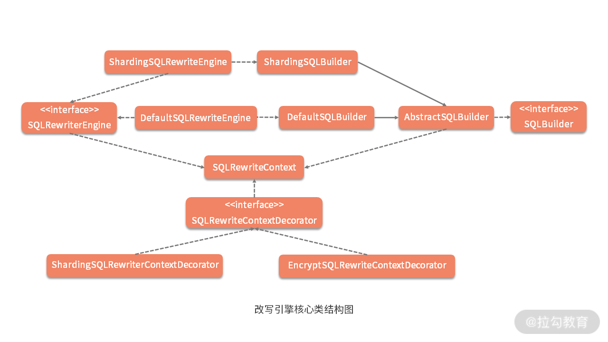
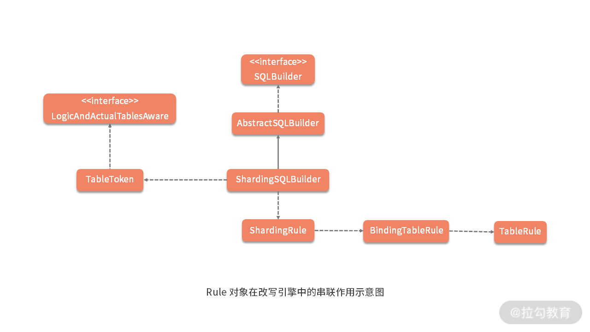

- 00 如何正确学习一款分库分表开源框架？.md.html
- 01 从理论到实践：如何让分库分表真正落地？.md.html
- 02 顶级项目：ShardingSphere 是一款什么样的 Apache 开源软件？.md.html
- 03 规范兼容：JDBC 规范与 ShardingSphere 是什么关系？.md.html
- 04 应用集成：在业务系统中使用 ShardingSphere 的方式有哪些？.md.html
- 05 配置驱动：ShardingSphere 中的配置体系是如何设计的？.md.html
- 06 数据分片：如何实现分库、分表、分库+分表以及强制路由？（上）.md.html
- 07 数据分片：如何实现分库、分表、分库+分表以及强制路由？（下）.md.html
- 08 读写分离：如何集成分库分表+数据库主从架构？.md.html
- 09 分布式事务：如何使用强一致性事务与柔性事务？.md.html
- 10 数据脱敏：如何确保敏感数据的安全访问？.md.html
- 11 编排治理：如何实现分布式环境下的动态配置管理？.md.html
- 12 从应用到原理：如何高效阅读 ShardingSphere 源码？.md.html
- 13 微内核架构：ShardingSphere 如何实现系统的扩展性？.md.html
- 14 分布式主键：ShardingSphere 中有哪些分布式主键实现方式？.md.html
- 15 解析引擎：SQL 解析流程应该包括哪些核心阶段？（上）.md.html
- 16 解析引擎：SQL 解析流程应该包括哪些核心阶段？（下）.md.html
- 17 路由引擎：如何理解分片路由核心类 ShardingRouter 的运作机制？.md.html
- 18 路由引擎：如何实现数据访问的分片路由和广播路由？.md.html
- 19 路由引擎：如何在路由过程中集成多种路由策略和路由算法？.md.html
- 20 改写引擎：如何理解装饰器模式下的 SQL 改写实现机制？.md.html
- 21 执行引擎：分片环境下 SQL 执行的整体流程应该如何进行抽象？.md.html
- 22 执行引擎：如何把握 ShardingSphere 中的 Executor 执行模型？（上）.md.html
- 23 执行引擎：如何把握 ShardingSphere 中的 Executor 执行模型？（下）.md.html
- 24 归并引擎：如何理解数据归并的类型以及简单归并策略的实现过程？.md.html
- 25 归并引擎：如何理解流式归并和内存归并在复杂归并场景下的应用方式？.md.html
- 26 读写分离：普通主从架构和分片主从架构分别是如何实现的？.md.html
- 27 分布式事务：如何理解 ShardingSphere 中对分布式事务的抽象过程？.md.html
- 28 分布式事务：ShardingSphere 中如何集成强一致性事务和柔性事务支持？（上）.md.html
- 29 分布式事务：ShardingSphere 中如何集成强一致性事务和柔性事务支持？（下）.md.html
- 30 数据脱敏：如何基于改写引擎实现低侵入性数据脱敏方案？.md.html
- 31 配置中心：如何基于配置中心实现配置信息的动态化管理？.md.html
- 32 注册中心：如何基于注册中心实现数据库访问熔断机制？.md.html
- 33 链路跟踪：如何基于 Hook 机制以及 OpenTracing 协议实现数据访问链路跟踪？.md.html
- 34 系统集成：如何完成 ShardingSphere 内核与 Spring+SpringBoot 的无缝整合？.md.html
- 35 结语：ShardingSphere 总结及展望.md.html
20 改写引擎：如何理解装饰器模式下的 SQL 改写实现机制？
回想在“17 | 路由引擎：如何理解分片路由核心类 ShardingRouter 的运作机制？”课时中，我们在 BaseShardingEngine 的 Shard 方法中看到了 ShardingSphere 中另一个重要的概念，即 SQL 改写（Rewrite）。
SQL 改写在分库分表框架中通常位于路由之后，也是整个 SQL 执行流程中的重要环节，因为开发人员是面向逻辑库与逻辑表所书写的 SQL，并不能够直接在真实的数据库中执行，SQL 改写，用于将逻辑 SQL 改写为在真实数据库中可以正确执行的 SQL。
事实上，我们已经在前面的案例中看到了 SQL 改写的应用场景，这个场景就是分布式主键的自动生成过程。在关系型数据库中，自增主键是常见的功能特性，而对于 ShardingSphere 而言，这也是 SQL 改写的典型应用场景。
今天，我们就将基于自增主键这一场景来探讨 ShardingSphere 中 SQL 改写的实现过程。
ShardingSphere 改写引擎基本结构
让我们先来看一下 BaseShardingEngine 中，用于执行改写逻辑的 rewriteAndConvert 方法：
private Collection<RouteUnit> rewriteAndConvert(final String sql, final List<Object> parameters, final SQLRouteResult sqlRouteResult) {
//构建 SQLRewriteContext
SQLRewriteContext sqlRewriteContext = new SQLRewriteContext(metaData.getRelationMetas(), sqlRouteResult.getSqlStatementContext(), sql, parameters);
//构建 ShardingSQLRewriteContextDecorator 对 SQLRewriteContext 进行装饰
new ShardingSQLRewriteContextDecorator(shardingRule, sqlRouteResult).decorate(sqlRewriteContext);
//判断是否根据数据脱敏列进行查询
boolean isQueryWithCipherColumn = shardingProperties.<Boolean>getValue(ShardingPropertiesConstant.QUERY_WITH_CIPHER_COLUMN);
//构建 EncryptSQLRewriteContextDecorator 对 SQLRewriteContext 进行装饰
new EncryptSQLRewriteContextDecorator(shardingRule.getEncryptRule(), isQueryWithCipherColumn).decorate(sqlRewriteContext);
//生成 SQLTokens
sqlRewriteContext.generateSQLTokens();
Collection<RouteUnit> result = new LinkedHashSet<>();
for (RoutingUnit each : sqlRouteResult.getRoutingResult().getRoutingUnits()) {
//构建 ShardingSQLRewriteEngine
ShardingSQLRewriteEngine sqlRewriteEngine = new ShardingSQLRewriteEngine(shardingRule, sqlRouteResult.getShardingConditions(), each);
//执行改写
SQLRewriteResult sqlRewriteResult = sqlRewriteEngine.rewrite(sqlRewriteContext);
//保存改写结果
result.add(new RouteUnit(each.getDataSourceName(), new SQLUnit(sqlRewriteResult.getSql(), sqlRewriteResult.getParameters())));
}
return result;
}
这段代码虽然内容不多，但却完整描述了实现 SQL 改写的整体流程，我们对核心代码都添加了注释，这里面涉及的核心类也很多，值得我们进行深入分析，相关核心类的整体结构如下：

可以看到在整个类图中，SQLRewriteContext 处于中间位置，改写引擎 SQLRewriteEngine 和装饰器 SQLRewriteContextDecorator 都依赖于它。
所以接下来，让我们先来看一下这个 SQLRewriteContext，并基于自增主键功能引出 SQL 改写引擎的基础组件 SQLToken。
从自增主键功能看改写引擎中的核心类
1. SQLRewriteContext
从命名上讲，与 SQLStatementContext 类似，SQLRewriteContext 也是一个上下文对象，让我们来看 SQLRewriteContext 中的变量定义：
//数据表和列的关系元数据
private final RelationMetas relationMetas;
//SQLStatement 上下文
private final SQLStatementContext sqlStatementContext;
//原始SQL
private final String sql;
//参数列表
private final List<Object> parameters;
//SQLToken 列表
private final List<SQLToken> sqlTokens = new LinkedList<>();
//参数构建器
private final ParameterBuilder parameterBuilder;
//SQLToken 生成器
private final SQLTokenGenerators sqlTokenGenerators = new SQLTokenGenerators();
在这里，我们看到了前面已经介绍的 SQLStatementContext，也看到了新的 SQLToken 和 SQLTokenGenerators。随着今天内容的演进，这些对象都会逐一进行介绍，这里我们先明确 SQLRewriteContext 中保存着用于 SQL 改写的各种相关信息。
2. SQLToken
接下来，我们来看一下 SQLToken 对象，该对象在改写引擎中重要性很高，SQLRewriteEngine 正是基于 SQLToken 实现了 SQL 改写，SQLToken 类的定义如下所示：
@RequiredArgsConstructor
@Getter
public abstract class SQLToken implements Comparable<SQLToken> {
private final int startIndex;
@Override
public final int compareTo(final SQLToken sqlToken) {
return startIndex - sqlToken.getStartIndex();
}
}
SQLToken 实际上是一个抽象类，在 ShardingSphere 中，存在了一大批 SQLToken 的子类。这些 SQLToken 多数跟 SQL 改写相关（这部分类的包名中包含 rewrite）；而有些在改写的基础上还与后面要讲到的数据脱敏功能相关（这部分类包名中还包含着 encrypt）。
数据脱敏也是 ShardingSphere 提供的一项非常实用的功能，我们在讲到“模块六：ShardingSphere 源码解析之治理与集成”时会有专题对其进行介绍。
同时，部分 SQLToken 位于 shardingsphere-rewrite-engine 工程中，而有些则位于 sharding-core-rewrite 工程中，这点也需要注意。
结合 SQL 改写的常见场景，很多 SQLToken 的含义可以从字面意思上直接理解。例如，对 INSERT 语句而言，如果使用数据库自增主键，是不需要写入主键字段的，但数据库的自增主键无法满足分布式场景下的主键唯一性，因此 ShardingSphere 提供了分布式自增主键的生成策略，能够自动地替换数据库现有的自增主键。
举例说明，我们案例中 health_record 表的主键是 record_id，假定原始的 SQL 为：
INSERT INTO health_record (user_id, level_id, remark) values (1, 1, "remark1")
可以看到，上述 SQL 中并未包含自增主键，需要数据库自行填充，在 ShardingSphere 中配置了自增主键后，SQL 将被自动改写为：
INSERT INTO health_record (record_id, user_id, level_id, remark) values ("471698773731577856", 1, 1, "Remark1")
显然，改写后的 SQL 将在 INSERT 语句中增加主键列名称，以及自动生成的自增主键值。
从命名上看，GeneratedKeyInsertColumnToken 对应上述的自动主键填充的场景，这实际上属于常见的一种 SQL 改写策略，也就是补列，GeneratedKeyInsertColumnToken 的实现如下所示：
public final class GeneratedKeyInsertColumnToken extends SQLToken implements Attachable {
private final String column;
public GeneratedKeyInsertColumnToken(final int startIndex, final String column) {
super(startIndex);
this.column = column;
}
@Override
public String toString() {
return String.format(", %s", column);
}
}
注意到这里多了一个 column 变量用于指定主键的所在列。我们再来跟踪 GeneratedKeyInsertColumnToken 的构造函数调用情况，发现这个类是通过 GeneratedKeyInsertColumnTokenGenerator 创建出来的。
接下来，让我们一起看看 TokenGenerator。
3. TokenGenerator
顾名思义，TokenGenerator 的作用是专门负责生成具体的 Token，该接口定义如下：
public interface SQLTokenGenerator {
//判断是否要生成 SQLToken
boolean isGenerateSQLToken(SQLStatementContext sqlStatementContext);
}
该接口还有两个子接口，分别是负责生成单个 SQLToken 的 OptionalSQLTokenGenerator 和负责生成批量 SQLToken 的 CollectionSQLTokenGenerator：
public interface OptionalSQLTokenGenerator extends SQLTokenGenerator {
//生成单个 SQLToken
SQLToken generateSQLToken(SQLStatementContext sqlStatementContext);
}
public interface CollectionSQLTokenGenerator extends SQLTokenGenerator {
//生成批量 SQLToken
Collection<? extends SQLToken> generateSQLTokens(SQLStatementContext sqlStatementContext);
}
在 ShardingSphere，和 SQLToken 一样，TokenGenerator 的类层结构也比较复杂。对于 GeneratedKeyInsertColumnTokenGenerator 而言，它还有一个抽象的基类，即如下所示的 BaseGeneratedKeyTokenGenerator：
public abstract class BaseGeneratedKeyTokenGenerator implements OptionalSQLTokenGenerator, SQLRouteResultAware {
//是否生成 SQLToken
protected abstract boolean isGenerateSQLToken(InsertStatement insertStatement);
//生成 SQLToken
protected abstract SQLToken generateSQLToken(SQLStatementContext sqlStatementContext, GeneratedKey generatedKey);
…
}
这个抽象类留下了两个模板方法 isGenerateSQLToken 和 generateSQLToken，交由子类进行实现，在 GeneratedKeyInsertColumnTokenGenerator 中提供了这两个方法的实现过程：
public final class GeneratedKeyInsertColumnTokenGenerator extends BaseGeneratedKeyTokenGenerator {
@Override
protected boolean isGenerateSQLToken(final InsertStatement insertStatement) {
Optional<InsertColumnsSegment> sqlSegment = insertStatement.findSQLSegment(InsertColumnsSegment.class);
return sqlSegment.isPresent() && !sqlSegment.get().getColumns().isEmpty();
}
@Override
protected GeneratedKeyInsertColumnToken generateSQLToken(final SQLStatementContext sqlStatementContext, final GeneratedKey generatedKey) {
Optional<InsertColumnsSegment> sqlSegment = sqlStatementContext.getSqlStatement().findSQLSegment(InsertColumnsSegment.class);
Preconditions.checkState(sqlSegment.isPresent());
//构建 GeneratedKeyInsertColumnToken
return new GeneratedKeyInsertColumnToken(sqlSegment.get().getStopIndex(), generatedKey.getColumnName());
}
}
我们看到在上述 generateSQLToken 方法中，通过利用在 SQL 解析引擎中获取的 InsertColumnsSegment 以及从用于生成分布式主键的 GeneratedKey 中获取对应的主键列，我们就可以构建一个 GeneratedKeyInsertColumnToken。
装饰器 SQLRewriteContextDecorator
现在，既然已经获取了 SQLToken，让我们再次回到前面提到的 SQLRewriteContext。我们知道 SQLRewriteContext 是一个上下文对象，保存着与 SQL 改写相关的很多数据信息，同时对于这些信息，其构建过程会根据不同的应用场景而有所不同。基于这些应用场景，ShardingSphere 的改写引擎提供了 SQLRewriteContextDecorator 接口：
public interface SQLRewriteContextDecorator {
//对SQLRewriteContext 执行装饰
void decorate(SQLRewriteContext sqlRewriteContext);
}
顾名思义，SQLRewriteContextDecorator 是一种装饰器模式的具体应用，在 ShardingSphere 中只存在两种具体的 SQLRewriteContextDecorator：一种是用于分片处理的 ShardingSQLRewriteContextDecorator，一种是用于数据脱敏的 EncryptSQLRewriteContextDecorator，我们将在“30 | 数据脱敏：如何基于改写引擎实现低侵入性数据脱敏方案？”中进行详细介绍。今天，我们关注的是前一种 ShardingSQLRewriteContextDecorator 的实现过程：
public final class ShardingSQLRewriteContextDecorator implements SQLRewriteContextDecorator {
private final ShardingRule shardingRule;
private final SQLRouteResult sqlRouteResult;
@Override
public void decorate(final SQLRewriteContext sqlRewriteContext) {
//参数改写
for (ParameterRewriter each : new ShardingParameterRewriterBuilder(shardingRule, sqlRouteResult).getParameterRewriters(sqlRewriteContext.getRelationMetas())) {
if (!sqlRewriteContext.getParameters().isEmpty() && each.isNeedRewrite(sqlRewriteContext.getSqlStatementContext())) {
each.rewrite(sqlRewriteContext.getParameterBuilder(), sqlRewriteContext.getSqlStatementContext(), sqlRewriteContext.getParameters());
}
}
//SQLTokenGenerators 初始化
sqlRewriteContext.addSQLTokenGenerators(new ShardingTokenGenerateBuilder(shardingRule, sqlRouteResult).getSQLTokenGenerators());
}
}
这段代码不长，包含了两部分内容：一个是参数改写，另一个是 SQLTokenGenerators 初始化，下面我将分别讲解：
1. 参数改写
参数改写部分又引入了几个新类。首当其冲的是 ParameterRewriter 以及构建它的 ParameterRewriterBuilder。
（1）ParameterRewriter
我们先来看 ParameterRewriter 的定义：
public interface ParameterRewriter {
//判断是否需要改写
boolean isNeedRewrite(SQLStatementContext sqlStatementContext);
//执行参数改写
void rewrite(ParameterBuilder parameterBuilder, SQLStatementContext sqlStatementContext, List<Object> parameters);
}
基于自增主键功能，这里以 ShardingGeneratedKeyInsertValueParameterRewriter 为例看一下 ParameterRewriter 的实现方式，它的 isNeedRewrite 方法如下所示：
@Override
public boolean isNeedRewrite(final SQLStatementContext sqlStatementContext) {
return sqlStatementContext instanceof InsertSQLStatementContext && sqlRouteResult.getGeneratedKey().isPresent() && sqlRouteResult.getGeneratedKey().get().isGenerated();
}
显然，输入的 SQL 应该是一种 InsertSQLStatement，并且只有在路由结果已经包含了 GeneratedKey 的情况下才执行这种改写。
（2）ParameterRewriterBuilder
在介绍 rewrite 方法之前，我们先来理解 ParameterBuilder 的概念，ParameterBuilder 是一种参数构建器：
public interface ParameterBuilder {
List<Object> getParameters();
}
ParameterBuilder 有两个实现类：分别是 StandardParameterBuilder 和 GroupedParameterBuilder。其中，GroupedParameterBuilder 保存着 StandardParameterBuilder 的一个集合，只适用于 InsertSQLStatement。
了解了这层关系之后，我们再来看 ShardingGeneratedKeyInsertValueParameterRewriter 的 rewrite 方法：
@Override
public void rewrite(final ParameterBuilder parameterBuilder, final SQLStatementContext sqlStatementContext, final List<Object> parameters) {
Preconditions.checkState(sqlRouteResult.getGeneratedKey().isPresent());
((GroupedParameterBuilder) parameterBuilder).setDerivedColumnName(sqlRouteResult.getGeneratedKey().get().getColumnName());
Iterator<Comparable<?>> generatedValues = sqlRouteResult.getGeneratedKey().get().getGeneratedValues().descendingIterator();
int count = 0;
int parametersCount = 0;
for (List<Object> each : ((InsertSQLStatementContext) sqlStatementContext).getGroupedParameters()) {
parametersCount += ((InsertSQLStatementContext) sqlStatementContext).getInsertValueContexts().get(count).getParametersCount();
Comparable<?> generatedValue = generatedValues.next();
if (!each.isEmpty()) {
//使用 GroupedParameterBuilder 进行补列和设置参数
((GroupedParameterBuilder) parameterBuilder).getParameterBuilders().get(count).addAddedParameters(parametersCount, Lists.<Object>newArrayList(generatedValue));
}
count++;
}
}
因为这个 ParameterRewriter 面向 InsertSQLStatement，所以这里用到了 GroupedParameterBuilder，并通过 SQLRouteResult 获取 GeneratedKey。我们设置了 GroupedParameterBuilder 中的 DerivedColumnName 为 GeneratedKey 的主键 Column，并通过一个循环添加了对应的 Index 和 Parameter，也就是完成了所需的补列操作。
这部分的操作实际上可以与 GeneratedKey 的生成过程结合起来一起看以便加深理解，在 [“14 | 分布式主键：ShardingSphere 中有哪些分布式主键实现方式？”]课时中提到的 createGeneratedKey 方法也是通过一个循环对 GeneratedKey 进行赋值。
private static GeneratedKey createGeneratedKey(final ShardingRule shardingRule, final InsertStatement insertStatement, final String generateKeyColumnName) {
GeneratedKey result = new GeneratedKey(generateKeyColumnName, true);
for (int i = 0; i < insertStatement.getValueListCount(); i++) {
result.getGeneratedValues().add(shardingRule.generateKey(insertStatement.getTable().getTableName()));
}
return result;
}
2. SQLTokenGenerator 初始化
上文内容我们关注 ShardingSQLRewriteContextDecorator 中使用 ParameterRewriter 进行参数改写的过程，这是 decorate 方法中的第一部分内容。
接下来我们继续讲解该方法的第二部分内容，即 为 SQLRewriteContext 添加 SQLTokenGenerator：
//SQLTokenGenerators 初始化
sqlRewriteContext.addSQLTokenGenerators(new ShardingTokenGenerateBuilder(shardingRule, sqlRouteResult).getSQLTokenGenerators());
这句代码关注于 SQLTokenGenerator 的创建，所以出现了一个ShardingTokenGenerateBuilder：
public interface SQLTokenGeneratorBuilder {
//获取 SQLTokenGenerator 列表
Collection<SQLTokenGenerator> getSQLTokenGenerators();
}
在 SQLTokenGeneratorBuilder 的实现类 ShardingTokenGenerateBuilder 中，可以看到内置了很多 TokenGenerator，包含我们在前面提到过的 GeneratedKeyInsertColumnTokenGenerator：
private Collection<SQLTokenGenerator> buildSQLTokenGenerators() {
Collection<SQLTokenGenerator> result = new LinkedList<>();
addSQLTokenGenerator(result, new TableTokenGenerator());
…
addSQLTokenGenerator(result, new OffsetTokenGenerator());
addSQLTokenGenerator(result, new RowCountTokenGenerator());
addSQLTokenGenerator(result, new GeneratedKeyInsertColumnTokenGenerator());
…
return result;
}
改写引擎 SQLRewriteEngine
在 ShardingSphere 中，SQLRewriteEngine 接口代表了改写引擎的入口：
public interface SQLRewriteEngine {
//基于 SQLRewriteContext 执行 SQL 改写
SQLRewriteResult rewrite(SQLRewriteContext sqlRewriteContext);
}
SQLRewriteEngine 接口只有一个方法，即根据输入的 SQLRewriteContext 返回一个 SQLRewriteResult 对象。我们通过前面的介绍已经了解到，可以通过装饰器类对 SQLRewriteContext 进行装饰，从而满足不同场景的需要。
注意到 SQLRewriteEngine 接口只有两个实现类：分别是 DefaultSQLRewriteEngine 和 ShardingSQLRewriteEngine。我们重点关注 ShardingSQLRewriteEngine，但在介绍这个改写引擎类之前，我们先要介绍一下 SQLBuilder 接口，从定义上可以看出 SQLBuilder 的目的就是构建最终可以执行的 SQL 语句：
public interface SQLBuilder {
//生成 SQL
String toSQL();
}
SQLBuilder 接口有一个抽象的实现类 AbstractSQLBuilder，它的 toSQL 方法如下所示：
@Override
public final String toSQL() {
if (context.getSqlTokens().isEmpty()) {
return context.getSql();
}
Collections.sort(context.getSqlTokens());
StringBuilder result = new StringBuilder();
result.append(context.getSql().substring(0, context.getSqlTokens().get(0).getStartIndex()));
//根据 SQLToken 拼装目标 SQL
for (SQLToken each : context.getSqlTokens()) {
result.append(getSQLTokenText(each));
result.append(getConjunctionText(each));
}
return result.toString();
}
可以看到，如果 SQLRewriteContext 的 sqlTokens 为空，就直接返回保存在 SQLRewriteContext 中的最终 SQL；反之，会构建一个保存 SQL的StringBuilder，然后依次添加每个 SQLTokenText 以及连接词 ConjunctionText，从而拼装成一个完整的 SQL 语句。注意到，这里获取 SQLTokenText 的方法是一个模板方法，需要 AbstractSQLBuilder 的子类进行实现：
//获取 SQLToken 文本
protected abstract String getSQLTokenText(SQLToken sqlToken);
作为 AbstractSQLBuilder的一个实现类，ShardingSQLBuilder 的 getSQLTokenText 方法就包含了 SQL 改写的一些场景：
@Override
protected String getSQLTokenText(final SQLToken sqlToken) {
if (sqlToken instanceof RoutingUnitAware) {
return ((RoutingUnitAware) sqlToken).toString(routingUnit);
}
if (sqlToken instanceof LogicAndActualTablesAware) {
return ((LogicAndActualTablesAware) sqlToken).toString(getLogicAndActualTables());
}
return sqlToken.toString();
}
对于输入的 SQLToken，这里有两个特殊的处理，即判断是否实现了 RoutingUnitAware 接口或 LogicAndActualTablesAware 接口。我们发现实现 RoutingUnitAware 接口的只有 ShardingInsertValuesToken；而实现 LogicAndActualTablesAware 的则有 IndexToken 和 TableToken 两个 SQLToken。
这里以实现了 LogicAndActualTablesAware 的 TableToken 为例展开讨论。表名改写就是将逻辑表名改写为真实表名的过程，是一个典型的需要对 SQL 进行改写的场景。我们考虑最简单表名改写场景，如果逻辑 SQL 为：
SELECT user_name FROM user WHERE user_id = 1;
那么，这里的逻辑表名为 user。假设我们配置了分片键 user_id，并且 user_id = 1 的情况，将路由至分片表 user_1，那么改写之后的 SQL 应该为：
SELECT user_name FROM user_1 WHERE user_id = 1;
可以看到这里的真实表名应该是 user_1 而不是 user，在用于改写表名的 TableToken 中，它的 toString 如下所示：
@Override
public String toString(final Map<String, String> logicAndActualTables) {
String actualTableName = logicAndActualTables.get(tableName.toLowerCase());
actualTableName = null == actualTableName ? tableName.toLowerCase() : actualTableName;
return Joiner.on("").join(quoteCharacter.getStartDelimiter(), actualTableName, quoteCharacter.getEndDelimiter());
}
这里的逻辑并不复杂，只是根据逻辑表名从 logicAndActualTables 中获取真实表名 actualTableName，然后进行字符串拼装而已。那么这个 logicAndActualTables 是从何而来呢？logicAndActualTables 的构建过程是在 ShardingSQLBuilder 中：
private Map<String, String> getLogicAndActualTables() {
Map<String, String> result = new HashMap<>();
Collection<String> tableNames = getContext().getSqlStatementContext().getTablesContext().getTableNames();
for (TableUnit each : routingUnit.getTableUnits()) {
String logicTableName = each.getLogicTableName().toLowerCase();
result.put(logicTableName, each.getActualTableName());
result.putAll(getLogicAndActualTablesFromBindingTable(routingUnit.getMasterSlaveLogicDataSourceName(), each, tableNames));
}
return result;
}
上述代码实际上也只是做了数据结构的拼装，我们沿着这里的 getLogicAndActualTablesFromBindingTable 方法继续往下看，会发现根据 logicTable 获取 actualTable 的过程实际上是发生在 BindingTableRule 中：
public String getBindingActualTable(final String dataSource, final String logicTable, final String otherActualTable) {
int index = -1;
for (TableRule each : tableRules) {
index = each.findActualTableIndex(dataSource, otherActualTable);
if (-1 != index) {
break;
}
}
if (-1 == index) {
throw new ShardingConfigurationException("Actual table [%s].[%s] is not in table config", dataSource, otherActualTable);
}
for (TableRule each : tableRules) {
if (each.getLogicTable().equals(logicTable.toLowerCase())) {
return each.getActualDataNodes().get(index).getTableName().toLowerCase();
}
}
throw new ShardingConfigurationException("Cannot find binding actual table, data source: %s, logic table: %s, other actual table: %s", dataSource, logicTable, otherActualTable);
}
而 BindingTableRule 又依赖于 TableRule 中保存的 ActualDataNodes 来完成 ActualTableIndex和ActualTable 的计算。回想起我们在案例中配置的分库分表规则，这里再次感受到了以 TableRule 和 BindingTableRule为 代表的各种 Rule 对象在 ShardingSphere 的串联作用：

当 ShardingSQLBuilder 完成 SQL 的构建之后，我们再回到 ShardingSQLRewriteEngine，这个时候我们对它的 rewrite 方法就比较明确了：
@Override
public SQLRewriteResult rewrite(final SQLRewriteContext sqlRewriteContext) {
return new SQLRewriteResult(new ShardingSQLBuilder(sqlRewriteContext, shardingRule, routingUnit).toSQL(), getParameters(sqlRewriteContext.getParameterBuilder()));
}
改写引擎的输出 SQLRewriteResult 对象就包含了最终的 SQL 以及配套的参数列表：
public final class SQLRewriteResult {
private final String sql;
private final List<Object> parameters;
}
讲完 ShardingSQLRewriteEngine 之后，我们最后回到 BaseShardingEngine 的 rewriteAndConvert 方法。现在，该方法中除了 EncryptSQLRewriteContextDecorator 部分的内容涉及数据脱敏功能，其他的部分我们应该都能明白整体的执行流程。该方法最终返回的是一个 RouteUnit 列表，RouteUnit 中又包含了 SQLUnit：
public final class RouteUnit {
//目标数据源名
private final String dataSourceName;
//SQL 单元
private final SQLUnit sqlUnit;
}
public final class SQLUnit {
//目标 SQL
private final String sql;
//参数列表
private final List<Object> parameters;
}
可以看到最终的结果实际上就是目标数据库、目标 SQL 以及相关参数，一旦我们获取了这些信息之后，我们就可以执行一条 SQL 语句。
从源码解析到日常开发
在今天的内容中，我们可以明显感受到装饰器模式的强大作用。装饰器模式允许向一个现有的对象添加新的功能，同时又不改变其结构，这种模式创建了一个装饰类，用来包装原有的类，并在保持类方法签名完整性的前提下，提供了额外的功能。
同时，我们注意到在 ShardingSphere 中，装饰器模式的作用对象是一个 SQLRewriteContext 上下文对象，这是一种值得学习的做法。在日常开发过程中，我们可以把需要根据不同场景进行不同处理的信息存储在一个上下文对象中，然后基于装饰器模式对这些信息进行装饰。两者的无缝集成，可以在很多应用场景下，完成基于子类实现方式所不能完成的功能，从而为对象动态添加一些额外的职责。
小结与预告
今天，我们花了一个课时的时间完整介绍了 ShardingSphere 中改写引擎的基本结构和各个核心类。改写引擎在设计上使用了装饰器模式，完成了从逻辑 SQL 到目标 SQL 的改写过程，我们也针对自增主键和表名改写这两个典型的应用场景，给出了对应的实现原理和源码分析。
请注意，改写引擎在 ShardingSphere 中不仅仅只用于这些场景，在后面的课程“30 | 数据脱敏：如何基于改写引擎实现低侵入性数据脱敏方案？”中，我们还会看到它在数据脱敏等场景下的应用。
最后给你留一道思考题：ShardingSphere 中，如何通过装饰器模式对 SQL 改写的上下文进行装饰？欢迎你在留言区与大家讨论，我将逐一点评解答。
现在，我们已经针对输入的逻辑 SQL 通过改写引擎获取了目标 SQL，有了目标 SQL 接下来就可以执行 SQL 了，这就是下一课时中要开始介绍的 ShardingSphere 执行引擎要做的事情。